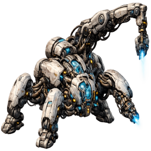
Constructor
Raises the base's buildings. Without it there's no unit production and no growth.
- Health
- 50
- Shield
- 50
- Vision
- 4
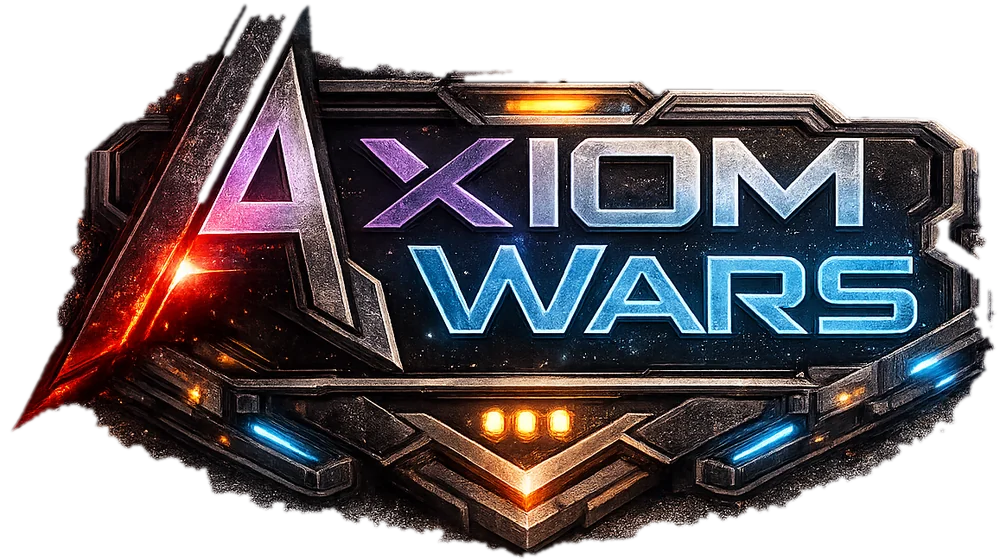
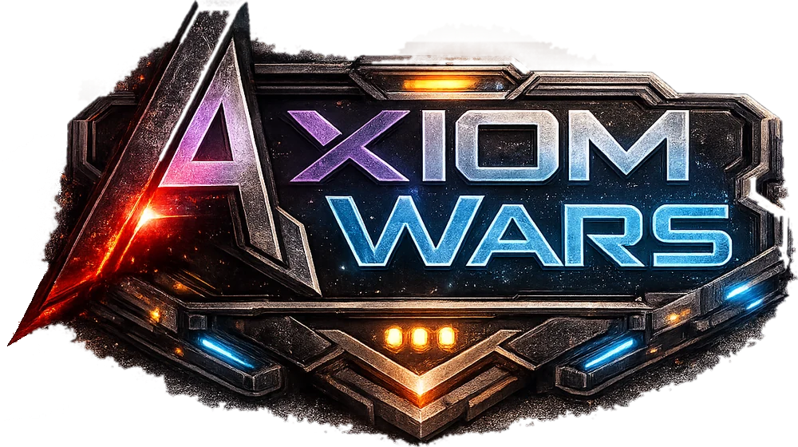
In development · test matches open
Build your base around the Government, keep your people fed and send your troops through the fog. Once everyone confirms, the server resolves the round and you watch everyone's plans collide.
How a round works
There are no player turns. Each round has three phases and every player, human or bot, goes through them at the same time.
Queue orders with your Action Points: build, move troops, hire, trade at the Bank. You see what each order costs before you give it.
When you're done, mark the round as ready. You can reorder, pause or cancel orders while the others decide.
The server runs everyone's orders at once and you watch it as a replay: marches, clashes, buildings going up and whatever the fog lets you see.
What's at stake
Winning is simple to explain: destroy the enemy Government. Getting there depends on everything else.
Forests, pastures, lagoons, oil wells and steel mines run dry. Every extractor needs workers and energy coverage.
Every individual consumes food and water. Ration them and their satisfaction drops; let it bottom out and they desert.
You only see what your units and buildings can see. You can order buildings blind on unexplored ground, with all the risk that implies.
Upgrading gives more Action Points and troop cap, and unlocks factories, launch pads and defenses. If it falls, you're out.
Resource bartering and loans paid back over a few in-game weeks. Handy to get out of a tight spot; dangerous if you pile up debt.
Free-for-all or teams, up to 4 versus 4. Empty seats are filled by bots that plan with evolutionary search.
Terran Faction
Civilian units keep the economy running; military units are recruited in buildings that require a higher-level Government. Values are provisional: balancing is still open.

Raises the base's buildings. Without it there's no unit production and no growth.
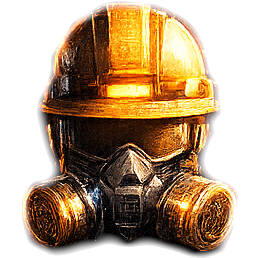
Runs extractors and generators, up to four per building. Dies if its building falls.
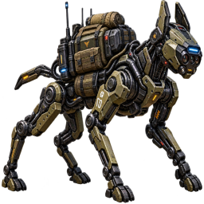
Crosses the map at high speed, digs into the subsoil and detects invisible units.
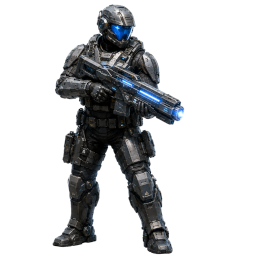
Basic, versatile infantry. Depending on the weapon, it hits light or heavy targets, ground only or ground-to-air.
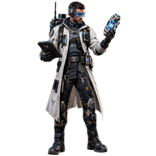
Doesn't attack. Its abilities strengthen allies and weaken the enemy.
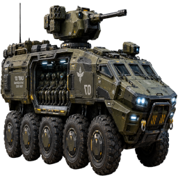
Carries light troops. Defends itself with a turret and lays contact mines.
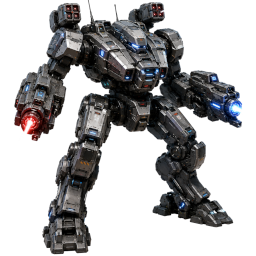
Medium-range assault with area damage against light units, plus anti-air fire.
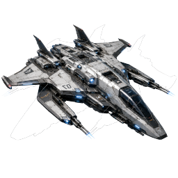
Ground bombing and ground-to-air attack. Can carry light units.
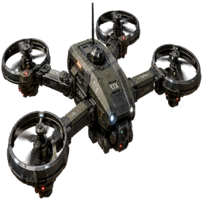
No attack. Opens dimensional portals that teleport troops.
Screenshots
Screenshots from the current development build. Click one to see it full size.
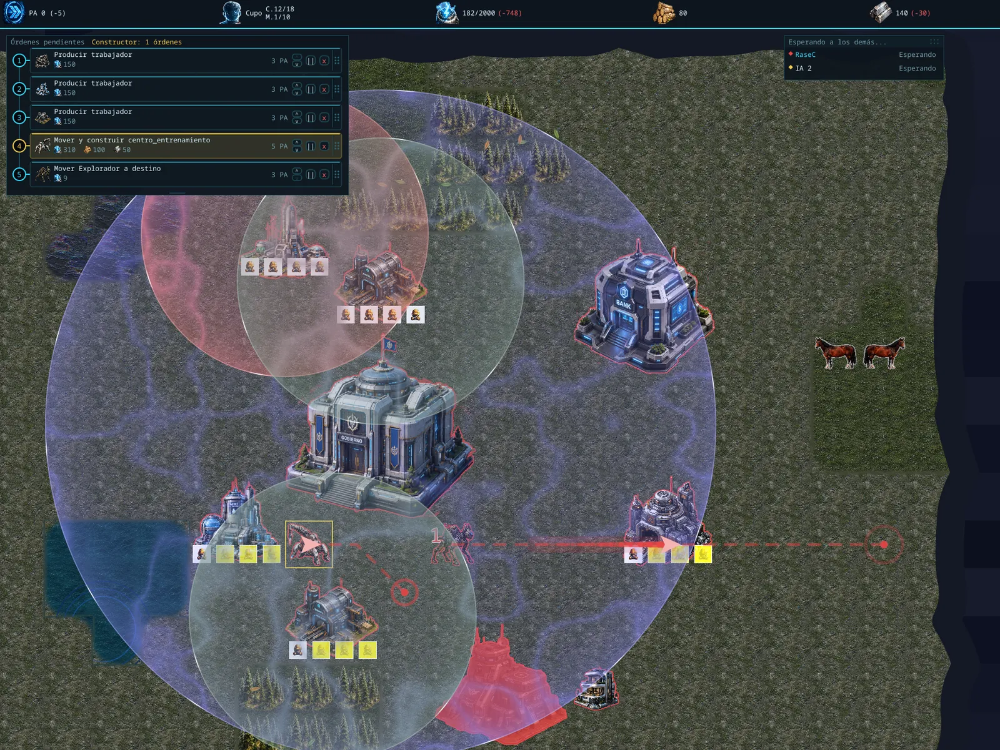
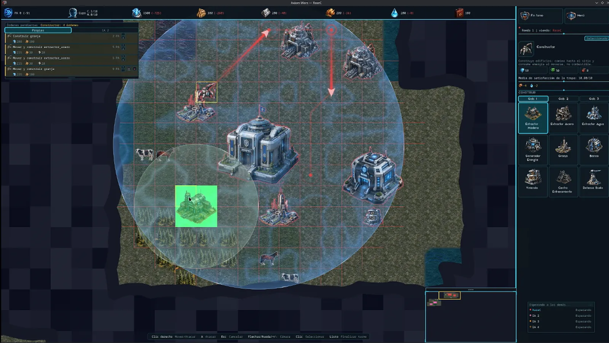
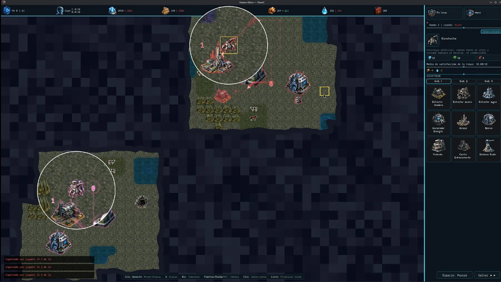
Museum
Axiom Wars started out as a terminal client. These are the versions it has gone through, from oldest to newest.
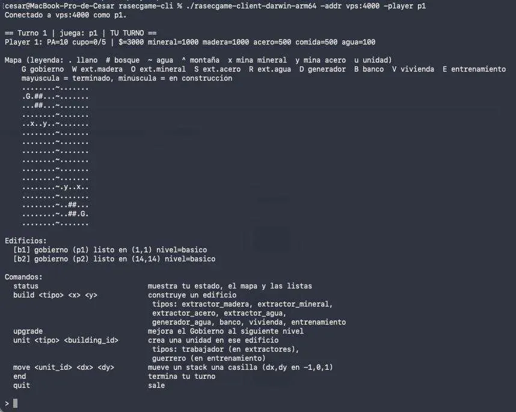
Terminal client. The map in ASCII characters and orders typed by hand: build, move, end.
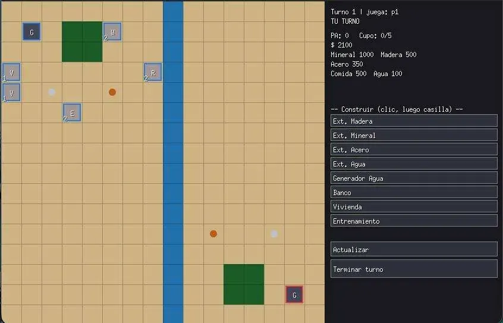
First window. Flat-colored tiles, buildings shown as letters and buttons to build.
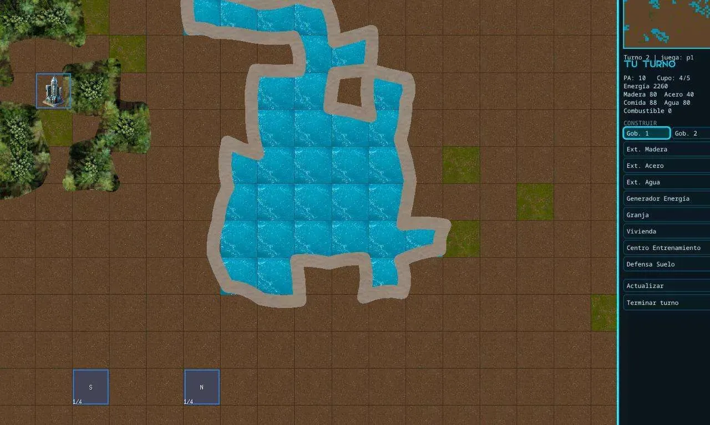
First textures. Drawn water, forest and earth, a minimap and the first illustrated building.
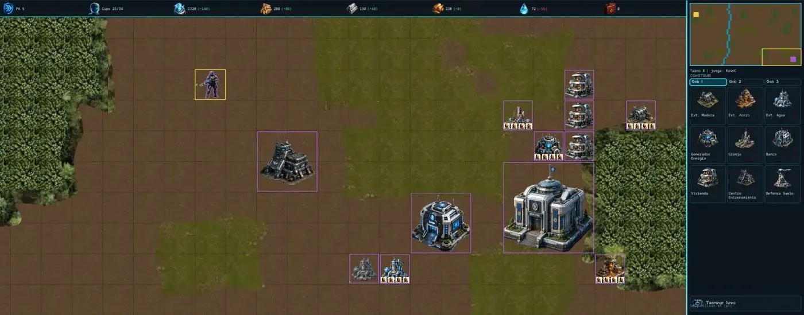
Illustrated buildings. The Government, the Bank and the icon-based build panel arrive.
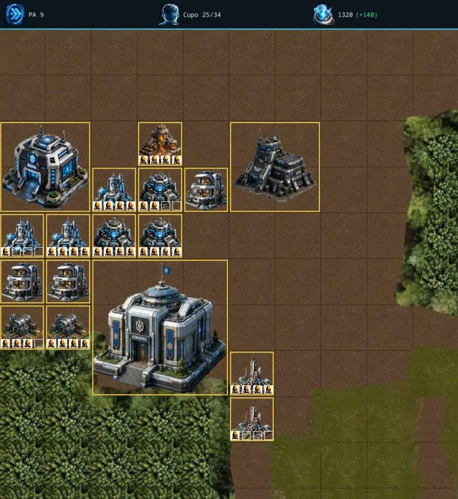
Workers on display. Each extractor shows below it how many of its four slots are filled.
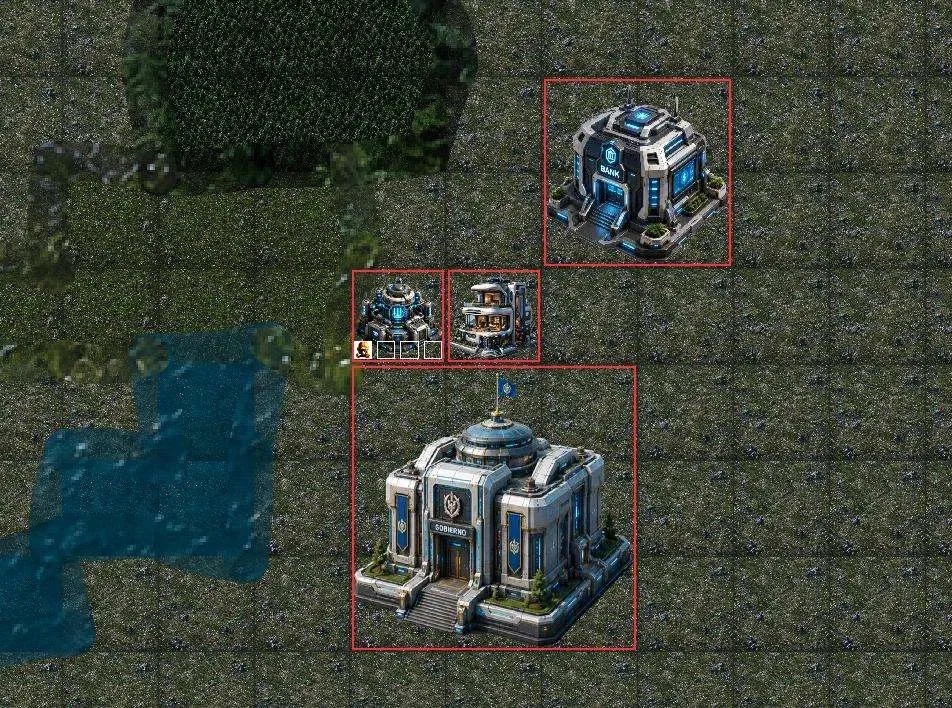
New terrain. Redesigned grass, lakes and forests, with buildings outlined in the player's color.
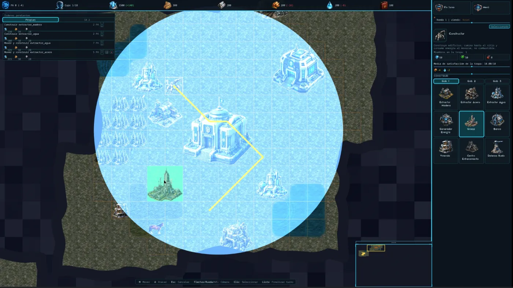
Simultaneous rounds. Order queue, side build panel and the energy area shown when placing a building.
Swipe to move along the timeline →
Community
On the Discord we organize test matches, announce every new build and collect bug reports and balance ideas.
Open DiscordDownloads
assets folder next to it.